İlknur Budak, artist and illustrator
drawing · index of works
17 entries · 2025–2026
- Untitled (study II)ink, pencil and wash on tracing paper2026
- Untitled (study)pencil and ink wash on paper2026
- Sheltermixed media on paper2026
- One doesn't turnhand-drawn animation, 12 s2026
- Two facesink on paper2026
- Half-submergedink on paper2026
- Hush, hushink on paper2026
- Moonanalogue and digital hybrid, 4 s2026
- The dark oneink on paper2026
- Restink on paper2026
- Threeink on paper2026
- Untitled (dive)pen on paper, frame by frame, 4 s2026
- Feedingink on paper2026
- Leanink on paper2026
- Dodoink on paper2025
- Untitled (loop)hand-drawn, frame by frame, 2 s2026
- Untitledcharcoal on paper2026
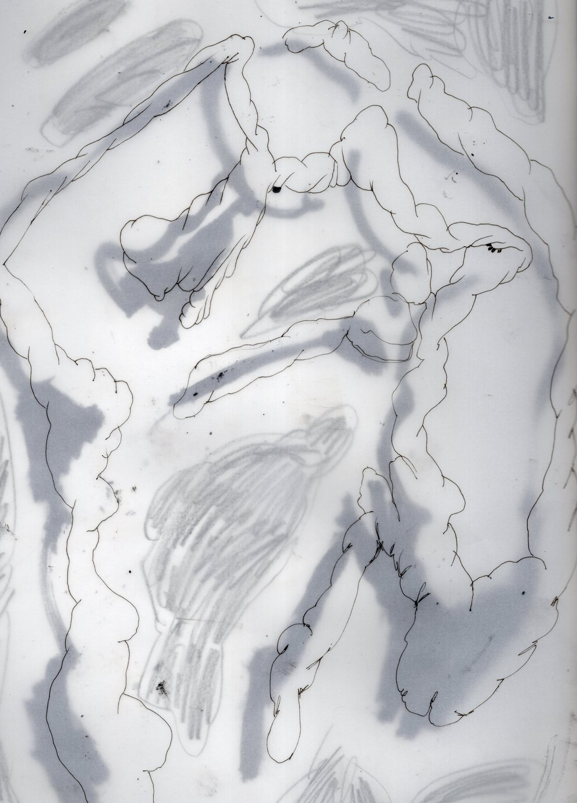
Untitled (study II), 2026
ink, pencil and wash on tracing paper
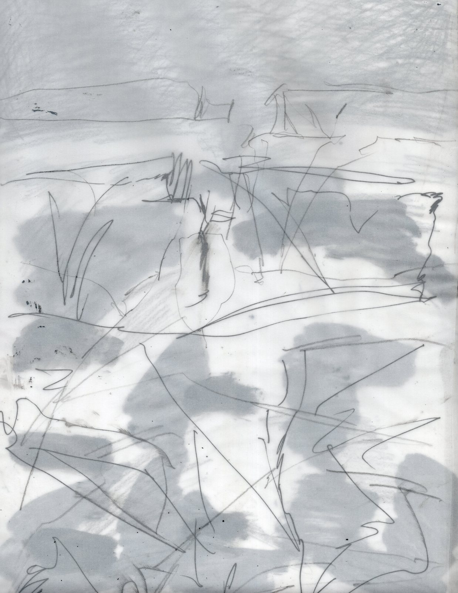
Untitled (study), 2026
pencil and ink wash on paper
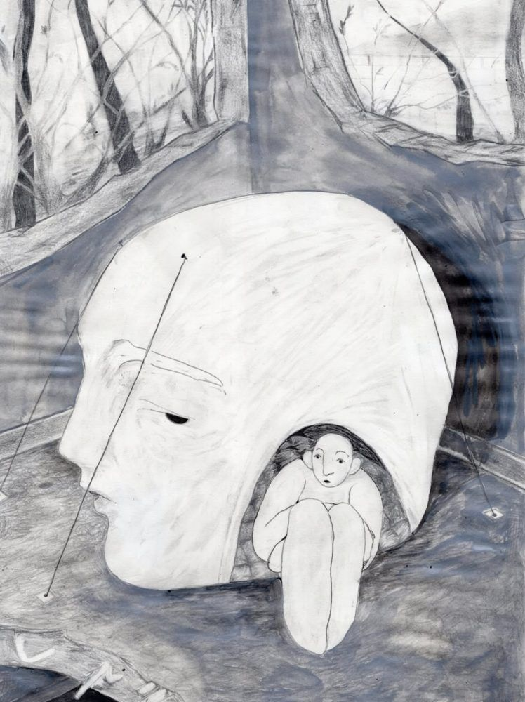
Shelter, 2026
mixed media on paper, A4
One doesn't turn, 2026
hand-drawn animation, 12 s
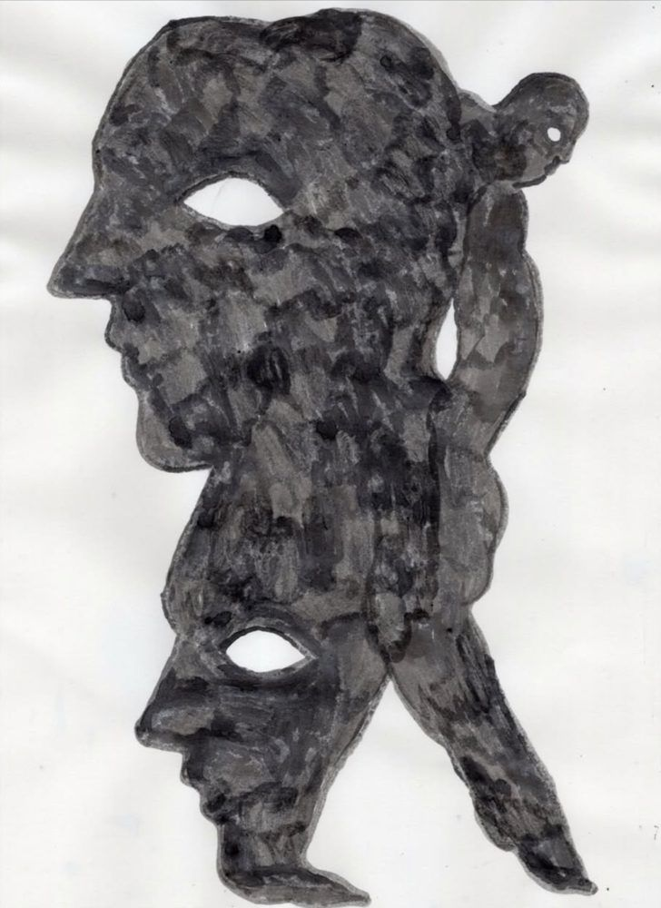
Two faces, 2026
ink on paper, A4
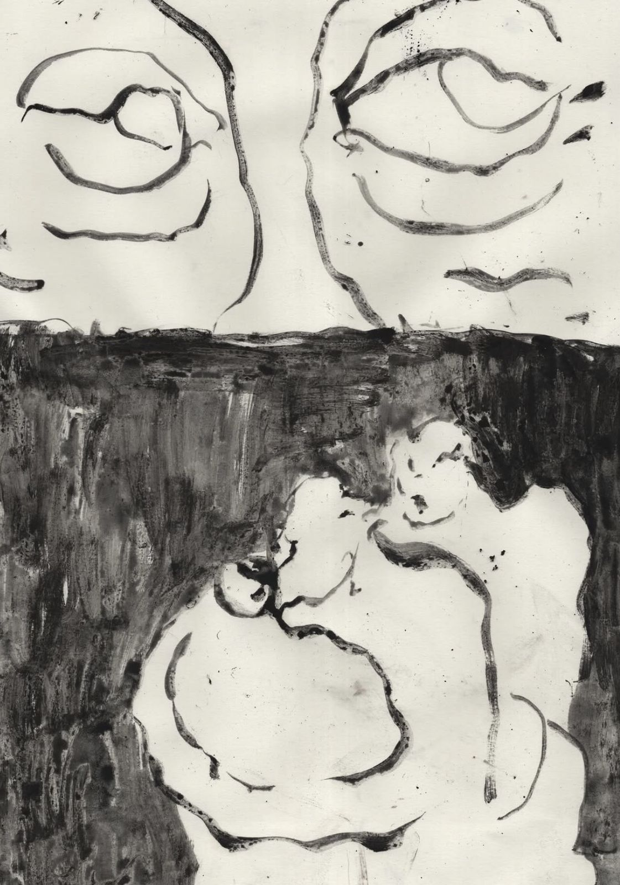
Half-submerged, 2026
ink on paper, A4
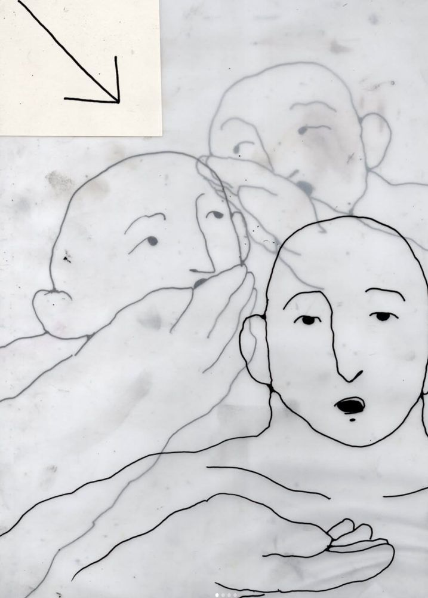
Hush, hush, 2026
ink on paper, A4
Moon, 2026
analogue and digital hybrid, 4 s
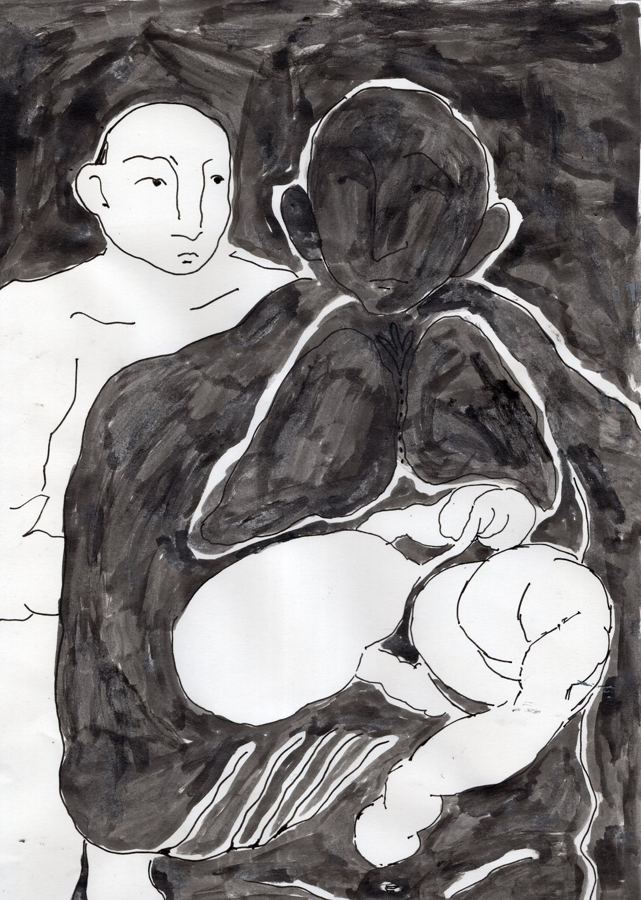
The dark one, 2026
ink on paper, A4
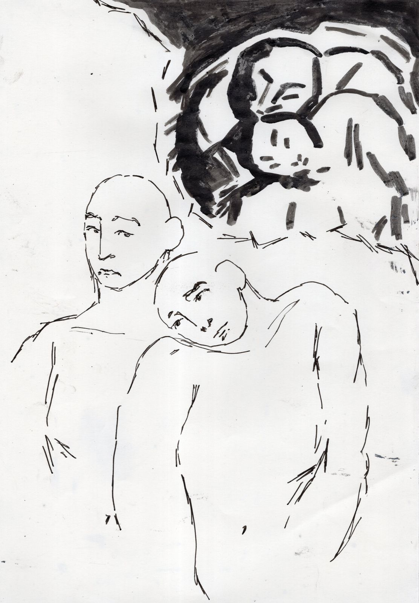
Rest, 2026
ink on paper, A4
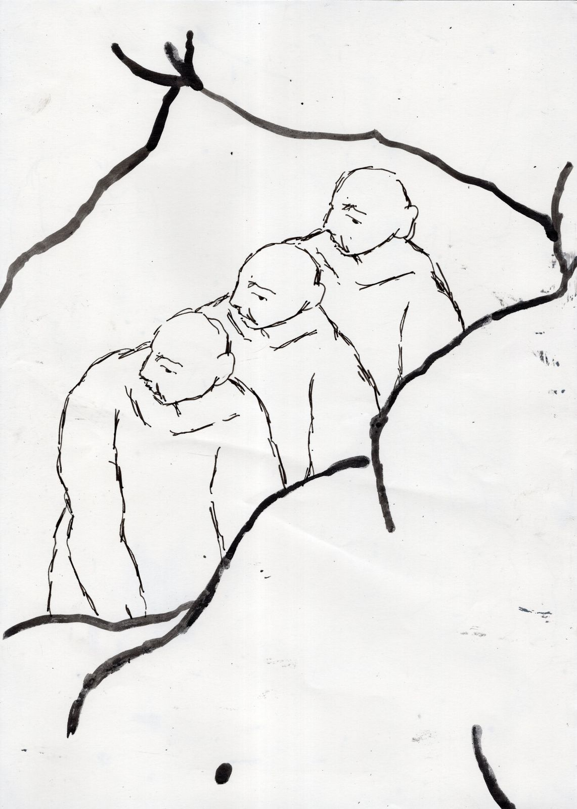
Three, 2026
ink on paper, A4
Untitled (dive), 2026
pen on paper, frame by frame, 4 s
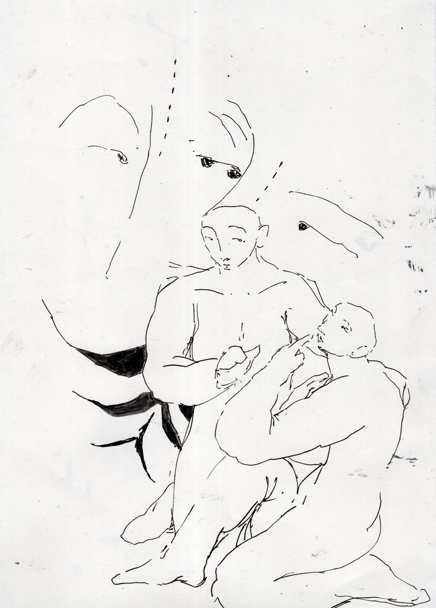
Feeding, 2026
ink on paper, A4

Lean, 2026
ink on paper, A4
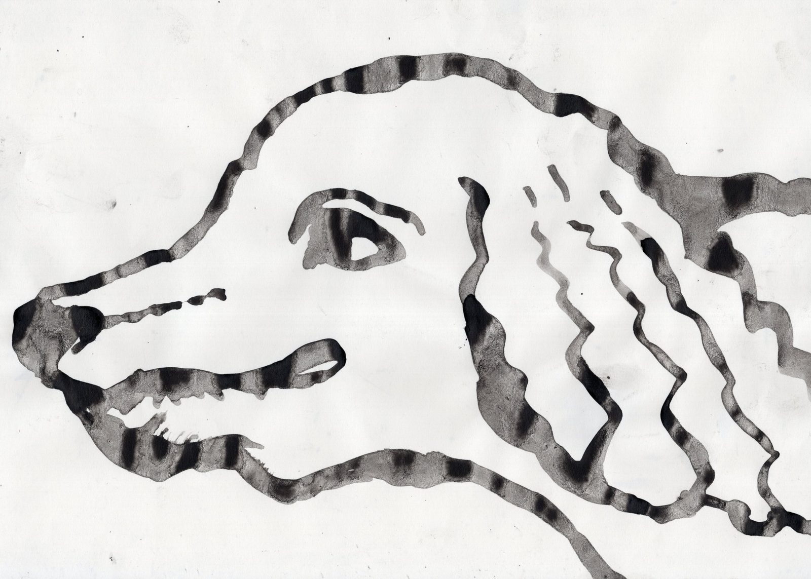
Dodo, 2025
ink on paper, A4
Untitled (loop), 2026
hand-drawn, frame by frame, 2 s
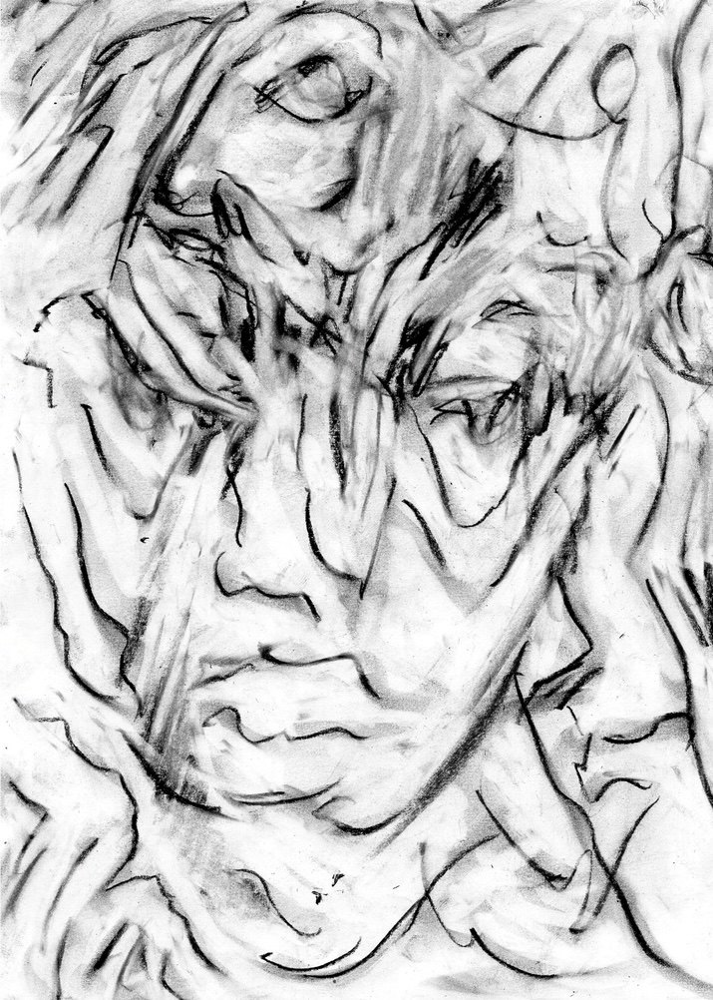
Untitled, 2026
charcoal on paper, A4
The story of face
an earlier series, 2023–2026